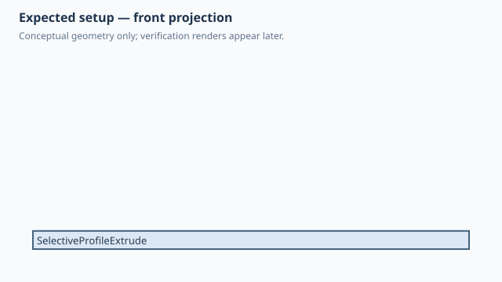

Forge model example
Selective Sketch profile extrusion
What this example makes
SolidCraft saves one Selected holes Sketch containing the associative four-circle pattern and one cut ExtrudeFeature that removes exactly three profiles while leaving the fourth region uncut.


Forge code
This is the complete Forge source used for this example.
"""Native selective Sketch profile extrusion qualification.
One Circle seed creates four associative profiles. The extrusion cuts only
three of them by fixed sketch-local profile points.
"""
class SelectiveProfileExtrude:
hole_diameter = 8.0
hole_pitch = 20.0
def build(self):
board = Box(120, 60, 5, anchor=Anchor.BOTTOM)
with Sketch(name="Selected holes", on=board, parent=Anchor.TOP) as holes:
seed = holes.add(
Circle2D(d=self.hole_diameter),
offset=(-30, 0),
)
holes.rectangular_pattern(
seed,
count=4,
spacing=self.hole_pitch,
direction=Axis.X,
)
return board - holes.extrude(
Depth.THROUGH_ALL,
profiles=[(-30, 0), (-10, 0), (30, 0)],
exact_regions=True,
)
SelectiveProfileExtrude()
API used
sketch.rectangular_pattern(...); sketch.extrude(Depth.THROUGH_ALL, profiles=[(x, y), ...], exact_regions=True)
Reference code
The same model is written independently with the reference libraries below. This makes it easier to compare modelling style and the resulting shape.
PythonSCAD
"""PythonSCAD geometry reference for selective profile extrusion."""
from pythonscad import *
CUT_HEIGHT = 9
CUT_Z = -2
plate = cube([120, 60, 5], center=True).up(2.5)
cutters = None
for x in (-30, -10, 30):
hole = cylinder(d=8, h=CUT_HEIGHT).translate([x, 0, CUT_Z])
cutters = hole if cutters is None else cutters | hole
model = plate - cutters

Reference result checks · PASS · 4/4 passed
| Check | Status | Expected | Measured | Detail |
|---|---|---|---|---|
| bounds | PASS | {'min': [-60.0, -30.0, 0.0], 'max': [60.0, 30.0, 5.0]} | {'min': [-60.0, -30.0, 0.0], 'max': [60.0, 30.0, 5.0]} | max difference 0.0 mm; allowed 0.5 mm |
| watertight | PASS | True | True | closed mesh |
| volume | PASS | 35246.01776313845 mm³ | 35275.03185161172 mm³ | difference 29.014088473268203 mm³; allowed 40.0 mm³ |
| surface distance probes | PASS | 9 surface measurements | 9/9 within tolerance | largest difference 0.116233 mm |
pyBOSL2
"""pyBOSL2 geometry reference for selective profile extrusion."""
from pybosl2 import cuboid, cyl
plate = cuboid([120, 60, 5]).translate([0, 0, 2.5])
cutters = None
for x in (-30, -10, 30):
hole = cyl(diameter=8, height=7).translate([x, 0, 2.5])
cutters = hole if cutters is None else cutters | hole
model = plate - cutters

Reference result checks · PASS · 4/4 passed
| Check | Status | Expected | Measured | Detail |
|---|---|---|---|---|
| bounds | PASS | {'min': [-60.0, -30.0, 0.0], 'max': [60.0, 30.0, 5.0]} | {'min': [-60.0, -30.0, 0.0], 'max': [60.0, 30.0, 5.0]} | max difference 0.0 mm; allowed 0.5 mm |
| watertight | PASS | True | True | closed mesh |
| volume | PASS | 35246.01776313845 mm³ | 35275.0318826036 mm³ | difference 29.014119465151452 mm³; allowed 40.0 mm³ |
| surface distance probes | PASS | 9 surface measurements | 9/9 within tolerance | largest difference 0.116234 mm |
CadQuery
"""CadQuery geometry reference for selective profile extrusion."""
import cadquery as cq
plate = cq.Workplane("XY").box(120, 60, 5, centered=(True, True, False))
cutters = None
for x in (-30, -10, 30):
hole = (
cq.Workplane("XY")
.center(x, 0)
.circle(4)
.extrude(7)
.translate((0, 0, -1))
)
cutters = hole if cutters is None else cutters.union(hole)
result = plate.cut(cutters)
model = cq.Assembly()
model.add(result, name="selective_profile_extrude")

Reference result checks · PASS · 4/4 passed
| Check | Status | Expected | Measured | Detail |
|---|---|---|---|---|
| bounds | PASS | {'min': [-60.0, -30.0, 0.0], 'max': [60.0, 30.0, 5.0]} | {'min': [-60.0, -30.0, 0.0], 'max': [60.0, 30.0, 5.0]} | max difference 0.0 mm; allowed 0.5 mm |
| watertight | PASS | True | True | closed mesh |
| volume | PASS | 35246.01776313845 mm³ | 35246.330213843656 mm³ | difference 0.31245070520526497 mm³; allowed 40.0 mm³ |
| surface distance probes | PASS | 9 surface measurements | 9/9 within tolerance | largest difference 0.00124453 mm |
build123d
"""build123d geometry reference for selective profile extrusion."""
from build123d import (
Align,
Axis,
Box,
BuildPart,
BuildSketch,
Circle,
Locations,
Mode,
extrude,
)
bottom = (Align.CENTER, Align.CENTER, Align.MIN)
with BuildPart() as model:
Box(120, 60, 5, align=bottom)
with BuildSketch(model.faces().sort_by(Axis.Z)[-1]):
with Locations(*[(x, 0) for x in (-30, -10, 30)]):
Circle(4)
extrude(amount=-5, mode=Mode.SUBTRACT)

Reference result checks · PASS · 4/4 passed
| Check | Status | Expected | Measured | Detail |
|---|---|---|---|---|
| bounds | PASS | {'min': [-60.0, -30.0, 0.0], 'max': [60.0, 30.0, 5.0]} | {'min': [-60.0, -30.0, 0.0], 'max': [60.0, 30.0, 5.0]} | max difference 0.0 mm; allowed 0.5 mm |
| watertight | PASS | True | True | closed mesh |
| volume | PASS | 35246.01776313845 mm³ | 35246.330213843656 mm³ | difference 0.31245070520526497 mm³; allowed 40.0 mm³ |
| surface distance probes | PASS | 9 surface measurements | 9/9 within tolerance | largest difference 0.00124453 mm |
How Forge builds it in SolidCraft
Forge emits the Circle and native sketch pattern once, then passes three fixed point selections directly to solid.extrude profiles with exact_regions=true. No profile indices, generated curve ids or deleted pattern copies appear in user Python.
Show generated SolidCraft commands
parameters.add
parameters.add
solid.box
model.faces
sketch.create
sketch.circle.center
sketch.pattern.rectangular
sketch.finish
solid.extrudeSolidCraft result
Built and measured with SolidCraft 0.42.0. Open the measurement details to inspect body sizes and editable parameters.
pattern mutated · 1 bodies
Editable parameters
| Name | Value |
|---|---|
hole_diameter | 10.0 |
hole_pitch | 24.0 |
d4 | 10.0 |
Body size
| Body | Minimum | Maximum |
|---|---|---|
| SelectiveProfileExtrude | [-60, -30, -7.27433e-32] | [60, 30, 5] |
Original model · 1 bodies
Editable parameters
| Name | Value |
|---|---|
hole_diameter | 8.0 |
hole_pitch | 20.0 |
d4 | 8.0 |
Body size
| Body | Minimum | Maximum |
|---|---|---|
| SelectiveProfileExtrude | [-60, -30, -7.27433e-32] | [60, 30, 5] |
Semantic validation · PASS · 13/13 checks passed
| Status | Level | Check | Expected | Actual |
|---|---|---|---|---|
| PASS | Q4 | declared target geometry | [{"label": "SelectiveProfileExtrude", "min": [-60, -30, 0], "max": [60, 30, 5]}] | [{"min": [-60.0, -30.0, -7.274332117816709e-32], "max": [60.0, 30.0, 5.000000000000001]}] |
| PASS | Q4 | single selectively cut plate body | 1 | 1 |
| PASS | Q4 | baseline seed and pattern parameters | {"hole_diameter": 8.0, "hole_pitch": 20.0} | {"hole_diameter": 8.0, "hole_pitch": 20.0} |
| PASS | Q4 | baseline cuts exactly three selected profiles | {"volume_mm3": 35246.01776313845, "cylindrical_faces": 3} | {"volume_mm3": 35246.017763124604, "cylindrical_faces": 3} |
| PASS | Q4 | baseline omits the +10 mm pattern profile | 0.07130661227494207 | 0.07130661232547605 |
| PASS | Q4 | selected-hole Sketch stays solved | {"Selected holes": "solved"} | {"Selected holes": "solved"} |
| PASS | Q4 | one Sketch and one selective extrusion remain in history | [["BoxFeature", "Box1"], ["Sketch", "Selected holes"], ["ExtrudeFeature", "Selected holes"]] | [["BoxFeature", "Box1"], ["Sketch", "Selected holes"], ["ExtrudeFeature", "Selected holes"]] |
| PASS | Q5 | declared mutation target geometry | [{"label": "SelectiveProfileExtrude", "min": [-60, -30, 0], "max": [60, 30, 5]}] | [{"min": [-60.0, -30.0, -7.27433211781671e-32], "max": [60.0, 30.0, 5.0]}] |
| PASS | Q5 | saved seed and pattern parameters changed | {"hole_diameter": 10.0, "hole_pitch": 24.0} | {"hole_diameter": 10.0, "hole_pitch": 24.0} |
| PASS | Q5 | saved profile selections still cut exactly three circles | {"volume_mm3": 34821.90275490383, "cylindrical_faces": 3} | {"volume_mm3": 34821.90275490493, "cylindrical_faces": 3} |
| PASS | Q5 | saved selection follows moved profiles and leaves +18 mm uncut | -0.0676641511170877 | -0.06766415111200456 |
| PASS | Q5 | mutation keeps one solved associative Sketch | {"Selected holes": "solved"} | {"Selected holes": "solved"} |
| PASS | Q5 | mutation preserves one Sketch and one extrusion | [["BoxFeature", "Box1"], ["Sketch", "Selected holes"], ["ExtrudeFeature", "Selected holes"]] | [["BoxFeature", "Box1"], ["Sketch", "Selected holes"], ["ExtrudeFeature", "Selected holes"]] |
Visual result
Actual is the SolidCraft render. Goal shows the expected shape. Overlay places both on top of each other so differences are easy to see.
Top

Current SolidCraft top view

Expected geometry in the same top view

Expected geometry over the actual top view
Front

Current SolidCraft front view

Expected geometry in the same front view

Expected geometry over the actual front view
Iso
Current SolidCraft iso view

Expected geometry in the same iso view

Expected geometry over the actual iso view
Show extra saved-render views
Right

Current SolidCraft right view

Expected geometry in the same right view

Expected geometry over the actual right view
Technical test details
Q1 and Q2 tests
These are the exact automated tests used for this example.
- Q1 PASS
- Q2 PASS
Geometry checks
These are the sizes and measurement points used by the automated checks.
| Body | Minimum | Maximum |
|---|---|---|
| SelectiveProfileExtrude | [-60, -30, 0] | [60, 30, 5] |
- Is the size check enough for this model? No — The selected cuts do not change the plate envelope. Volume, cylindrical wall probes and saved-design mutation are required to prove that exactly the chosen patterned profiles are cut.
- Views checked: top, front, iso
- Internal features checked: 3
- Expected volume: 35246.01776313845 mm³ (±40.0 mm³)
- Closed solid expected: True
- Surface points checked: 9
Show all geometry check points
Internal features
- selected hole 1: centre
[-30.0, 0.0], diameter 8.0 mm, Z[0.0, 5.0] - selected hole 2: centre
[-10.0, 0.0], diameter 8.0 mm, Z[0.0, 5.0] - selected hole 4: centre
[30.0, 0.0], diameter 8.0 mm, Z[0.0, 5.0]
Surface measurement points
- selected hole 1 at z=0.5: point
[-30.0, 0.0, 0.5]→ 4.0 mm (±0.3 mm) - selected hole 1 at z=2.5: point
[-30.0, 0.0, 2.5]→ 4.0 mm (±0.3 mm) - selected hole 1 at z=4.5: point
[-30.0, 0.0, 4.5]→ 4.0 mm (±0.3 mm) - selected hole 2 at z=0.5: point
[-10.0, 0.0, 0.5]→ 4.0 mm (±0.3 mm) - selected hole 2 at z=2.5: point
[-10.0, 0.0, 2.5]→ 4.0 mm (±0.3 mm) - selected hole 2 at z=4.5: point
[-10.0, 0.0, 4.5]→ 4.0 mm (±0.3 mm) - selected hole 4 at z=0.5: point
[30.0, 0.0, 0.5]→ 4.0 mm (±0.3 mm) - selected hole 4 at z=2.5: point
[30.0, 0.0, 2.5]→ 4.0 mm (±0.3 mm) - selected hole 4 at z=4.5: point
[30.0, 0.0, 4.5]→ 4.0 mm (±0.3 mm)
Saved-design test
Checked in the saved model. Change hole_diameter 8->10 mm and hole_pitch 20->24 mm in the saved .sc design. Without rerunning Python the three selected cuts must follow their associated pattern profiles, including profiles whose centres move away from the original pick points; the unselected profile remains uncut.
Raw test files
- Forge fixture source
- PythonSCAD reference source
- pyBOSL2 reference source
- CadQuery reference source
- build123d reference source
- Generated command JSON in build output
- results.json
- measurements-pattern-mutated.json
- measurements.json
- joint-inspect.json
- model-pattern-mutated.sc
- model.sc
- model.step
- qualification-result.json
- validation.json
- visual-validation.json
- camera-front.json
- camera-iso.json
- camera-right.json
- camera-top.json
- q1-case-evidence.txt
- q2-case-evidence.txt
- Native snapshot: model.png
- Native snapshot: model-top.png
- Native snapshot: goal-top.png
- Native snapshot: overlay-top.png
- Native snapshot: model-front.png
- Native snapshot: goal-front.png
- Native snapshot: overlay-front.png
- Native snapshot: visual-diff-front.png
- Native snapshot: model-right.png
- Native snapshot: goal-right.png
- Native snapshot: overlay-right.png
- Native snapshot: visual-diff-right.png
- Native snapshot: model-iso.png
- Native snapshot: goal-iso.png
- Native snapshot: overlay-iso.png
- Native snapshot: visual-diff-iso.png
- Reference evidence: reference-pythonscad/result.json
- Reference evidence: reference-pythonscad/model.stl
- Reference evidence: reference-pythonscad/model-front.png
- Reference evidence: reference-pythonscad/model-right.png
- Reference evidence: reference-pythonscad/model-iso.png
- Reference evidence: reference-pybosl2/result.json
- Reference evidence: reference-pybosl2/model.stl
- Reference evidence: reference-pybosl2/model-front.png
- Reference evidence: reference-pybosl2/model-right.png
- Reference evidence: reference-pybosl2/model-iso.png
- Reference evidence: reference-cadquery/result.json
- Reference evidence: reference-cadquery/model.stl
- Reference evidence: reference-cadquery/model-front.png
- Reference evidence: reference-cadquery/model-right.png
- Reference evidence: reference-cadquery/model-iso.png
- Reference evidence: reference-build123d/result.json
- Reference evidence: reference-build123d/model.stl
- Reference evidence: reference-build123d/model-front.png
- Reference evidence: reference-build123d/model-right.png
- Reference evidence: reference-build123d/model-iso.png


Reference documentation
- SolidCraft: Native Q5 proves that saved point-based profile selections remain attached to the intended profile curves after pattern spacing and diameter changes.
- PythonSCAD: Independent final geometry confirms the baseline three-hole result without using Forge's profile-selection lowering.
- CadQuery: Independent final geometry confirms that only three of the four possible patterned positions are cut.
- build123d: Independent final geometry confirms the selected-hole plate.